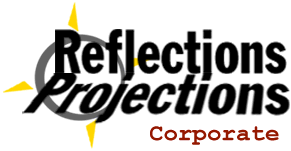

-Additional Information

The Reflections | Projections conference committee would like to thank you for sponsoring the 1998 fall conference. If you have any questions, please email reflections@acm.uiuc.edu or call the ACM office at (217) 333-5828. Typically, email will receive a quicker response.
Publicity
In preparation for the conference, we ask that you send us a short (one- or two-line) description of your company along with a small GIF/JPEG of your company logo. We will use this information on our web pages and in our publicity.
If you have posters that you would like posted around campus, please mail them to us two weeks before the conference.
Job Fair
The job fair begins at 10am on Friday, October 2, and lasts until 5pm in the atrium of the Digital Computer Lab.
We will be assigning booth spaces, and we will give students a map of the atrium to help them find your company easily. Please set up at your assigned table.
Our staff will be available at 9am to help you set up your booth. Each company will have approximately 8 feet of space, and we will provide you with a table, chairs, and a bulletin board. You will be assigned a volunteer to help you throughout the day.
We will have bagels, coffee, and orange juice available in the morning. In the afternoon, we will be serving boxed lunches. Please let us know if you have any special meal needs. Refreshments will be available all day.
If you need to ship display materials beforehand, please send them to ACM, Digital Computer Lab, 1304 W. Springfield Ave, MC258, Urbana, IL 61801.
Each member of your recruiting team will receive a resume book in the morning, which will contain resumes for all the students who mailed in their resumes before the conference. After the job fair, we will mail you a supplemental book that has additional resumes.
Information Sessions and Interview Rooms
If you would like to host an information session about your company or you would like to reserve interview rooms, email reflections@acm.uiuc.edu. Time slots and space for information sessions are limited, so official sponsors will be given preference in scheduling.
A lecture room in the Digital Computer Lab will be available for information sessions Monday, September 28, through Wednesday, September 30 and on Friday, October 2. All that week, sessions can also be scheduled at the Bread Company, a local restaurant.
A limited number of sessions can be scheduled during the conference on Saturday and Sunday.
A small number of interview rooms in the Digital Computer Lab will be available Friday morning. Additional rooms will should available at Grainger Engineering Library and the Illini Union all weekend. We will confirm their availability this week.
After the Job Fair
Volunteers will be available to help you take down your booths. Dinner will be served after the job fair. In the past, it has been a good chance for recruiters to unwind.
Recruiters are encouraged to attend the rest of the conference events on Saturday and Sunday.
Once again, we would like to thank you for participating in the conference. It would not be possible without your generosity.

Last updated 08.13.98 by Valerie Franek, franek@uiuc.edu.